Об университете
В Севастопольском государственном университете успешно работает и развивается институт ядерной энергии и промышленности, в состав которого входит кафедра радиоэкологии и экологической безопасности. Институт расположен в уникальном регионе на юге Крыма в г. Севастополе, на берегу живописной лагуны Севастопольской бухты Черного моря – в местечке «Голландия». Здание института было построено для размещения Морского кадетского корпуса и для обучения в нем сына последнего русского царя царевича Алексея. Обучение в институте располагает к полноценному получению современного образования европейского уровня, гармоничному развитию личности в условиях здорового курортного микроклимата.
О специальностях
Кафедра "Радиоэкологии и экологической безопасности"
Кафедра Радиоэкологии и экологической безопасности готовит специалистов с широким диапазоном экологических и химических знаний по специальности «Экология и природопользование», «Техносферная безопасность». На сегодняшний день выпускники работают во многих отраслях народного хозяйства ,на промышленных предприятиях, в каждом из которых имеется отдел охраны окружающей среды, в этом плане особо следует отметить атомные электростанции, предприятия по добыче и переработке урановых руд и другие предприятия ядерно-топливного цикла, где успешно трудятся выпускники. В Севастополе и в Крыму в управлениях экологии работают 70 % наших выпускников, а также выпускники востребованы в органах таможни, в Экологической милиции, в различных научно-исследовательских институтах. В процессе обучения будущие специалисты-экологи могут использовать лучшие в Севастополе и Крыму читальный зал и научно-техническую библиотеку, вычислительный центр и компьютерные классы для самостоятельной работы, хорошо оборудованные спортивный зал, спортивные тренажеры и спортивные площадки. Особо следует отметить использование в учебном процессе исследовательского атомного реактора ИР-100, на котором студенты имеют уникальную возможность получить практическую подготовку в области радиационной экологии, радиационной безопасности, работе с радиоактивными веществами, которая во многих случаях будет востребована в будущей практической деятельности специалистов - экологов как на предприятиях ядерно-топливного цикла, так и в других учреждениях и предприятиях, использующих источники ионизирующих излучений. Будущие специалисты получают хорошую химическую, инженерную и биологическую подготовку.
Кафедра «Радиоэкологии и экологической безопасности» осуществляет подготовку бакалавров по направлениям:
• 05.03.06 "Экология и природопользование", профиль - Экологическая безопасность
• 20.03.02 "Природообустройство и водопользование"
Магистров по направлению:
• 05.04.06 " Экология и природопользование", профиль - Экологическая безопасность
• 20.04.01 "Техносферная безопасность", профиль - Радиоэкология
Для обеспечения высокого качества учебного процесса и проведения научных исследований на кафедре
радиоэкологии и экологической безопасности имеется 3 специализированные лаборатории, оснащенные современными
приборами и оборудованием, лекционные аудитории, оснащенные мультимедийным оборудованием.
Абитуриенту
Направления подготовки специалистов
Бакалавр направления подготовки 05.03.06 – «Экология и природопользование», профиль Экологическая безопасность;
Магистр направления подготовки 05.04.06 - "Экология и природопользование", профиль - Экологическая безопасность
Форма обучения бакалавр:
• очная (бюджетная, коммерческая), срок обучения – 4 года;
• заочная (бюджетная, коммерческая), срок обучения – 4 года.
Форма обучения магистр:
• очная (бюджетная, коммерческая), срок обучения –2 года;
• заочная (бюджетная, коммерческая), срок обучения – 2 года.
Навыки, которые приобретает выпускник в процессе обучения:
- Проведение пробоотбора и пробоподготовки объектов окружающей среды;
- Определение физико-химических параметров объектов окружающей среды,
обоснование физико–химических методов научно – исследовательскими расчетами;
- Расчет выбросов, сбросов и оценка воздействия на окружающую среду антропогенной деятельности человека;
- Научно-исследовательская работа в лаборатории (проведение эксперимента).
После окончания обучения выпускник может работать в таких структурах:
- Управление охраной и разработкой природных ресурсов;
- Природно-заповедный фонд РФ (особо охраняемые природные территории);
- Сфера обращения с отходами (бытовыми, промышленными, радиоактивными);
- Мелиорация и охрана земель различного назначения;
- Атомные электростанции Российской Федерации.
Бакалавр направления подготовки 20.03.02 "Природообустройство и водопользование"
Форма обучения:
• очная (бюджетная, коммерческая), срок обучения – 4 года;
• заочная (бюджетная, коммерческая), срок обучения – 4 года.
Навыки, которые приобретает выпускник в процессе обучения:
- Проведение пробоотбора и пробоподготовки объектов окружающей среды;
- Принятие профессиональных решений при строительстве и эксплуатации объектов природообустройства
и водопользования;
- Использование положений водного и земельного законодательства и правил охраны природных ресурсов
при водопользовании и обустройстве природной среды;
- Оперирование техническими средствами при осуществлении работ по природообустройству и водопользованию,
при измерении основных параметров природных и технологических процессов.
После окончания обучения выпускник может работать:
- Управление охраной и разработкой природных ресурсов;
- Природно-заповедный фонд РФ (особо охраняемые природные территории);
- ГУПС «Водоканал»;
- Канализационно-очистные сооружения;
- Мелиорация и охрана земель различного назначения;
- Атомные электростанции Российской Федерации.
Магистр направления подготовки 20.04.01 "Техносферная безопасность", профиль - Радиоэкология
Форма обучения:
• очная (бюджетная, коммерческая), срок обучения – 2 года;
• заочная (бюджетная, коммерческая), срок обучения – 2 года.
Навыки, которые приобретает выпускник в процессе обучения:
- Организации и проведения радиоэкологического мониторинга;
- Проведение экспериментальных исследований в области радиотоксикологии.
После окончания обучения выпускник может работать в таких структурах:
- Управление охраной и разработкой природных ресурсов (радиоэкологическая лаборатория);
- ФГБНУ Институт морских биологических исследований им. А.О. Ковалевского РАН (радиоэкологическая лаборатория);
- Сфера обращения с отходами (бытовыми, промышленными, радиоактивными);
- Атомные электростанции Российской Федерации.
Руководящие документы о поступлении:
- Положение о приемной комиссии (doc, 130Кб)
- Положение о экзаменационной комиссии (doc, 85Кб)
- Положение об апеляционной комиссии (doc, 61Кб)
 Состав комплекта документов
(docx, 12Кб)
Состав комплекта документов
(docx, 12Кб)- Сроки этапов приемной кампании (doc, 36Кб)
- Экзамены (doc, 84Кб)
 Проект правил приема
(pdf, 354Кб)
Проект правил приема
(pdf, 354Кб)
Перспективные направления научной деятельности:
• Разработка новых процессов умягчения и деминерализации воды для экологически безопасных водоциркуляционных систем.
• Стабилизационная обработка воды для экологически безопасных систем водопотребления в энергетике.
• Исследование радиоэкологической и радиационной безопасности в месте расположения ядерного объекта
• Ядерное гидрирование оболочек тепловыделяющих элементов.
• Биодеструкция твердосплавных отходов типа ВК, ВН, ВНЖ
Материально-техническое оснащение кафедры
Лабораторное оборудование
Учебные лаборатории кафедры оснащены современным оборудованием и наглядными пособиями,
которые используются в учебном процессе и в научно-исследовательской работе сотрудников кафедры РЭиЭБ.
Ниже представлены лишь некоторые из приборов и оборудования, используемых в образовательном процессе на кафедре.
Фотоколориметр КФК-3-01
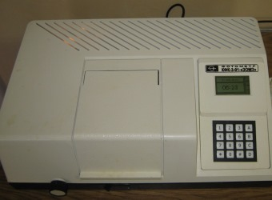Назначение: предназначены для измерения коэффициента пропускания и оптической
плотности прозрачных жидкостных растворов, а также для определения скорости изменения
оптической плотности веществ и концентрации растворов после предварительной градуировки
фотометров потребителем.
Область применения: применяется в сельском хозяйстве, на предприятиях водоснабжения,
в металлургической, химической, пищевой промышленности, в лабораториях медицинских
учреждений, экологической службе и других отраслях.
рН-метр 150 МИ
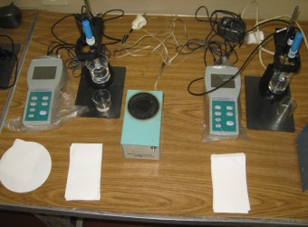Назначение: предназначены для измерения показателя активности ионов водорода (pH),
показателя активности других одновалентных и двухвалентных ионов (рХ), окислительно-восстановительного
потенциала (Eh) и температуры (t) водных растворов и непосредственного измерения pH мяса и мясопродуктов.
Область применения: применяется для проведения измерений в лабораторной практике, а также для
оперативных измерений на предприятиях пищевой промышленности и в других отраслях промышленности,
в том числе, в теплоэнергетике.
Спектрофотометр СФ - 2000
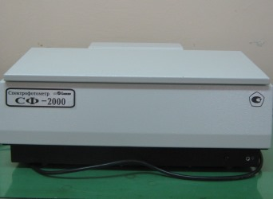Назначение: предназначен для измерения спектральных коэффициентов
направленного пропускания жидких и твердых прозрачных образцов.
Область применения: применяется в лаборатории научно- исследовательских,
промышленных, фармацевтических, экологических и других учреждений.
Психрометры аспирационные
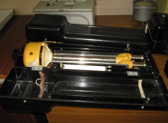Назначение: предназначены для измерения температуры воздуха и температуры "смоченного"
термометра с целью последующего вычисления по психрометрическим таблицам параметров влажности воздуха.
Область применения: применяется в лаборатории научно-исследовательских,
промышленных, экологических и других учреждений.
Газоанализатор ПГА-ВМП
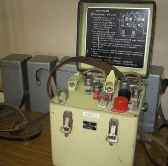Назначение: предназначены для покачивания исследуемой газовой смеси через
индикаторные трубки при экспресс-определении.
Область применения: применяется в производственных лабораториях.
Учебный план
Краткая характеристика учебного плана (привлекательные стороны программы):
Направленность на получение выпускниками широкого спектра знаний, необходимых для решения как общих,
так и специфических задач в области природопользования, радиоэкологии и охраны окружающей среды; их фундаментальную
подготовку в области современных средств обнаружения и локализации загрязняющих веществ в объектах окружающей среды,
что создает
хорошие предпосылки для эффективного применения приобретенных знаний, умений и навыков на практике.
Краткая характеристика учебного плана (профессионально-ориентированные вариативные дисциплины):
Специальное природопользование, метрологические основы экологии, радиоэкология, экономика природопользования, радиоэкологические основы радиационной безопасности, экологическая токсикология, радиобиология, экологическая безопасность, технология очистки промышленных сбросов, инструментальные методы анализа в экологии, правовые основы природопользования и охраны окружающей среды, нормирование и снижение загрязнения окружающей среды, теоретические основы химических процессов, радиохимия и радиометрия, обращение с радиоактивными отходами, радиационные источники, радиационная токсикология, технология очистки промышленных выбросов.
Краткая характеристика учебного плана (профессионально-ориентированные базовые дисциплины):
- модуль - основы экологии (общая экология, органическая химия в экологии, заповедное дело, экология человека);
- модуль - учение о сферах земли (гидрология, картографические методы в экологии, ландшафтоведение);
- модуль - прикладная экология (экологическая экспертиза, экологический мониторинг, техногенные системы и
экологический риск, оценка воздействия на окружающую среду, организация управления
в экологической деятельности,
химические методы анализа водных объектов окружающей среды, урбоэкология, безопасность жизнедеятельности).
Практика
О производственной практике студентов:
В процессе обучения студенты проходят производственную практику на предприятиях города Севастополя,
города Ялты, города Бахчисарай, Атомных станциях Российской Федерации:
• АО "Балаклавское Рудоуправление им. А.М. Горького".
• Государственное бюджетное учреждение Республики Крым "Бахчисарайское межрайонное управление водного хозяйства".
• Департамент архитектуры и градостроительства, Республика Крым, г. Ялта.
• Управление лесного и охотничьего хозяйства города Севастополя.
• Севастопольский морской аквариум.
• ФГБНУ Институт морских биологических исследований им. А.О. Ковалевского РАН
• АО "Бахчисарайский комбинат "Стройиндустрия"
• Атомные электростанции Российской Федерации
Состав кафедры
«Приходя в гости к природе, не делай ничего, что счёл бы неприличным делать в гостях». Арманд Д.Л.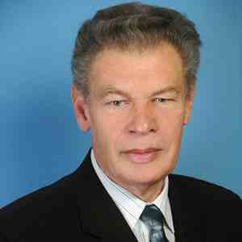
Общий стаж работы - 25 лет. Стаж работы по специальности - 20 лет.
Преподаваемые дисциплины:
• Химические методы анализа водных объектов окружающей среды
• Теоретические процессы химических процессов
• Технология очистки промышленных сбросов
• Химия
«В природе должен черпать человек правила для своего поведения, если желает быть вполне счастливым». Буаст П.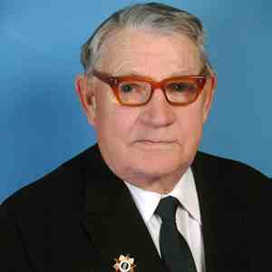
Общий стаж работы - 51 год Стаж работы по специальности - 45 лет
Преподаваемые дисциплины:
• Экологический менеджмент
• Основы энергосбережения
«Чтобы беречь Землю, природу, надо её полюбить, чтобы полюбить, надо узнать, узнав – невозможно не полюбить». Сладков А.Н.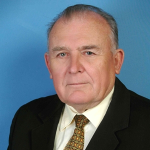
Общий стаж работы - 65 лет Стаж работы по специальности - 65 лет
Преподаваемые дисциплины:
• Экологическая безопасность
• Рекультивация загрязненных территорий
«Без знания основ радиоэкологии и её законов современное образование, как общее,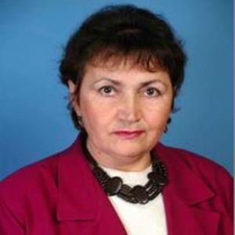
так и специальное в области энергетики и, особенно, атомной энергетики полноценным быть не может».
Общий стаж работы - 62 года Стаж работы по специальности - 56 лет
Преподаваемые дисциплины:
• Радиоэкология
• Основы радиоаналитических методов в радиоэкологии
• Радиоэкология (по отраслям)
• Радиоэкологический мониторинг
«Никакие материальные блага не способны заменить здоровой среды жизни». Реймерс Н.Ф.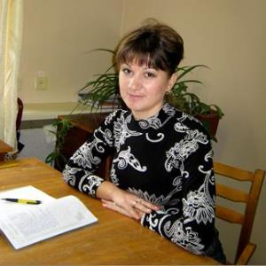
Общий стаж работы -44 года Стаж работы по специальности -30 лет
Преподаваемые дисциплины:
• Экологическая токсикология
• Радиобиология
• Радиационная токсикология
• Радиационные источники
• Биологическое действие ИИ
• Реабилитация радиационно-загрязненных территорий
• Радиационные источники и оценка их влияния на окружающую среду
«Поведение человека в природе – это и зеркало его души». Зелинский К.Л.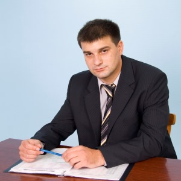
Общий стаж работы -17 лет Стаж работы по специальности - 6 лет
Преподаваемые дисциплины:
• Нормирование и снижение загрязнения окружающей среды
• Техногенные системы и экологический риск
• Экологический мониторинг
• Управление экологической безопасностью
«Познать природу родного края можно либо своими глазами, либо с помощью книги». Ломоносов М.В.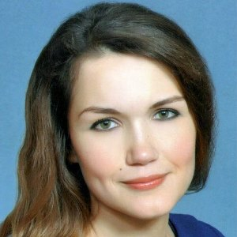
Общий стаж работы -15 лет Стаж работы по специальности - 5 лет
Преподаваемые дисциплины:
• Способы и системы дезактивации
• Радиоактивные отходы и радиационная безопасность
• Радиационное загрязнение окружающей среды и радиационная безопасность
«Вода – больший дефицит, чем энергия. У нас есть альтернативные источники энергии, но альтернативы воды нет». Одум Юджин.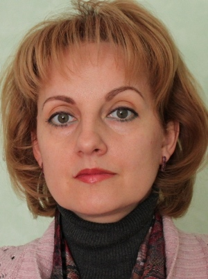
Общий стаж работы - 16 лет Стаж работы по специальности - 6 лет
Преподаваемые дисциплины:
• Урбоэкология
• Утилизация и рекуперация отходов
• Технология очистки промышленных сбросов
• Расчет и проектирование систем обеспечения безопасности
• Методология и организация научных исследований
«Если наше поколение не сделает невозможного, нас ожидает немыслимое». Петра Келли.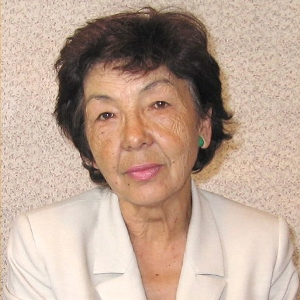
Общий стаж работы - 24 года Стаж работы по специальности - 15 лет
Преподаваемые дисциплины:
• Ландшафтоведение
• Современные проблемы экологии и природопользования
«Природа так обо всем позаботилась, что по всюду ты находишь, чему учиться». Леонардо да Винчи.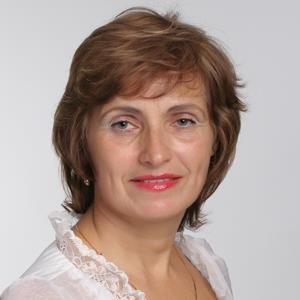
Общий стаж работы - 50 лет Стаж работы по специальности - 30 лет
Преподаваемые дисциплины:
• Правовые основы природопользования и охраны окружающей среды
• Управление и обращение с отходами
• Международное сотрудничество в области охраны окружающей среды
«Не потому ли на Земле все меньше аистов, что все больше людей?». Ю. Скрылев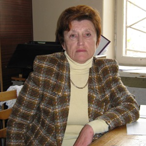
Общий стаж работы - 35 глет Стаж работы по специальности - 5 лет
Преподаваемые дисциплины:
• Безопасность жизнедеятельности
«Проблемы образования, и особенно экологического образования, имеют абсолютный приоритет перед всеми другими целями общества».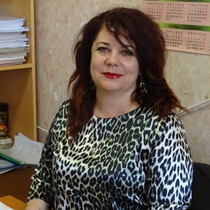
Общий стаж работы - 47 лет Стаж работы по специальности - 11 лет
Преподаваемые дисциплины:
• Метрологические основы экологии
• Инструментальные методы анализа в экологии
• Экологическая стандартизация и сертификация
• Инженерные средства защиты окружающей среды
• Расчет и проектирование систем обеспечения безопасности
«Экология – мера относительная, величина измеряемая человеческой глупостью».
Общий стаж работы - 18 лет Стаж работы по специальности - 14 лет
Преподаваемые дисциплины:
• Экология, блок Основы экологии
• Оценка воздействия на окружающую среду
• Экологическая экспертиза
• Экспертиза безопасности
• Экологический менеджмент и аудит
• Системный анализ качества

«Современная экология – это наука о том, как передать Природу, наш общий дом, нашим детям и внукам, чтобы им в нем было жить лучше и удобней, чем нам».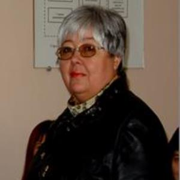
Общий стаж работы - 40 лет Стаж работы по специальности - 19 лет
Преподаваемые дисциплины:
• Технологии очистки промышленных выбросов
• Технологии основных производств и промышленная экология
• Рекультивация загрязненных территорий
• Энергосберегающие технологии
• Правовые аспекты радиоэкологии
• Экологические аспекты применения нанотехнологий и биотехнологий
• Малоотходные и ресурсосберегающие технологии в энергетике
«Спорьте, ошибайтесь, заблуждайтесь, но, ради бога, размышляйте, и хоть криво, да сами» Г.Е. Лессинг.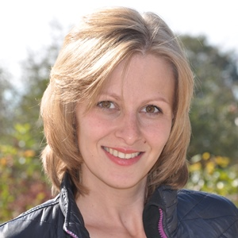
Общий стаж работы - 38 лет Стаж работы по специальности - 19 лет
Преподаваемые дисциплины:
• Геология
• Почвоведение
• Экология человека
• Основы микробиологии и биотехнологии
• Биология
Как сказал английский зоолог, писатель-анималист, защитник природы Даррелл Джеральд Малколм: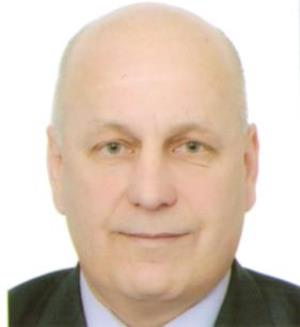
«Скорость, с какой развивается цивилизация, и, следовательно, скорость, с какой люди опустошают нашу удивительно
прекрасную планету, растёт, из месяца в месяц. Долг каждого – попытаться предотвратить ужасное осквернение нашего мира,
и в эту борьбу каждый может внести свой, пусть маленький, пусть скромный вклад», - а мы поможем Вам осуществить Ваш вклад.
Общий стаж работы - 13 лет Стаж работы по специальности - 8 лет
Преподаваемые дисциплины:
• Радиоэкологический основы радиационной безопасности
• Мониторинг безопасности
• Технологические процессы и экологическая безопасность ядерно-топливного цикла
«Крупные катастрофы, уже разорившие и продолжающие разорять современный мир, происходят от нежелания человека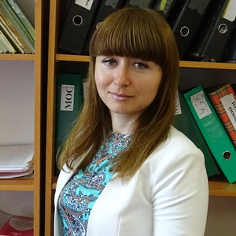
считаться с законами природы, от нежелания понять, что голод нельзя утолить, опустошая землю». Ж.Дорст.
Общий стаж работы - 32 лет Стаж работы по специальности - 16 лет
Преподаваемые дисциплины:
• Безопасность жизнедеятельности
«Как прекрасна Земля и на ней человек». Есенин С.А.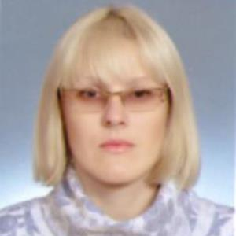
Общий стаж работы - 15 лет Стаж работы по специальности - 10 лет
Преподаваемые дисциплины:
• Специальное природопользование
• Организация управления в экологической деятельности
«"Зеленый" станет президентом не раньше, чем проголосуют деревья». Колюш.
Общий стаж работы - 12 лет Стаж работы по специальности - 4 года
Преподаваемые дисциплины:
• Безопасность жизнедеятельности
«Жаль, что деревья не раздают WiFi, тогда их сажали бы на каждом шагу. А так они всего лишь
дают кислород, без которого человек не может жить»
Начала преподавательскую деятельность в 2015 году после окончания обучения в аспирантуре.
Преподаваемые дисциплины:
• Безопасность жизнедеятельности
Инженерно-лаборантский состав кафедры
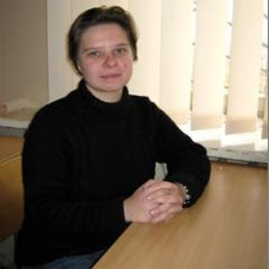Cтаж работы по специальности - 9 лет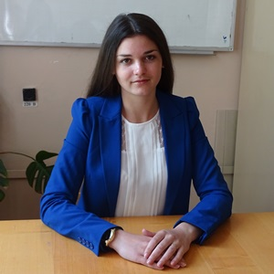
После окончания магистратуры начала трудовую деятельность на кафедре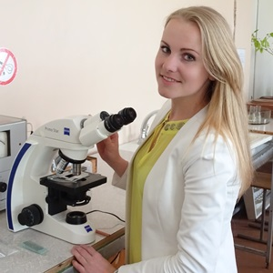
После окончания магистратуры начала трудовую деятельность на кафедре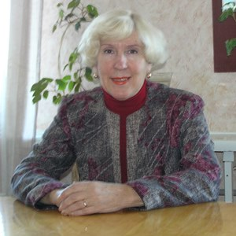
Общий стаж работы – 47 лет; стаж работы по специальности - 10 лет
Контактные данные
299015, г. Севастополь, ул. Курчатова, 7
Зав. каф. РЭиЭБ +7 978 795-92-67